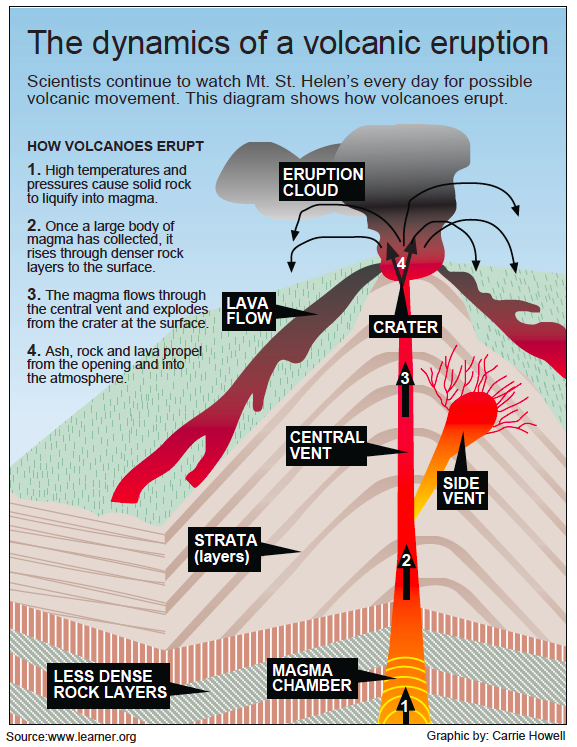
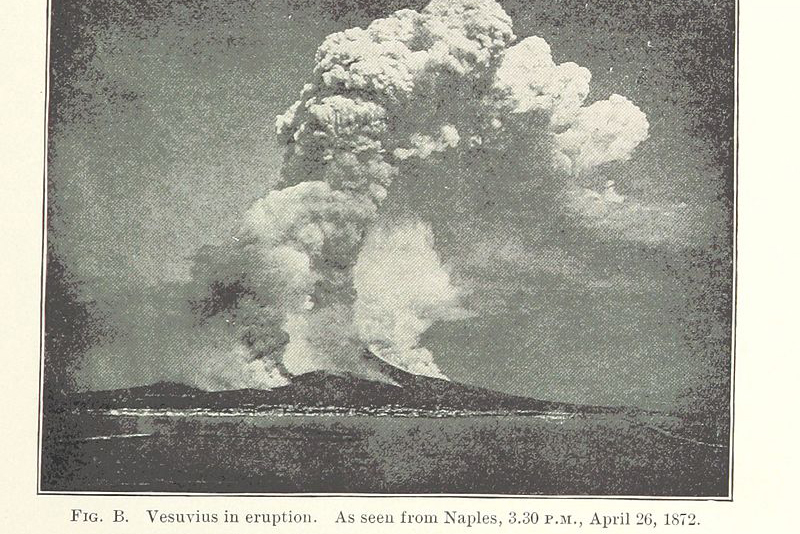
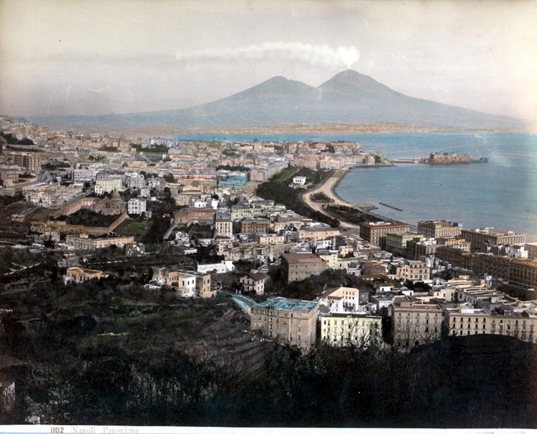
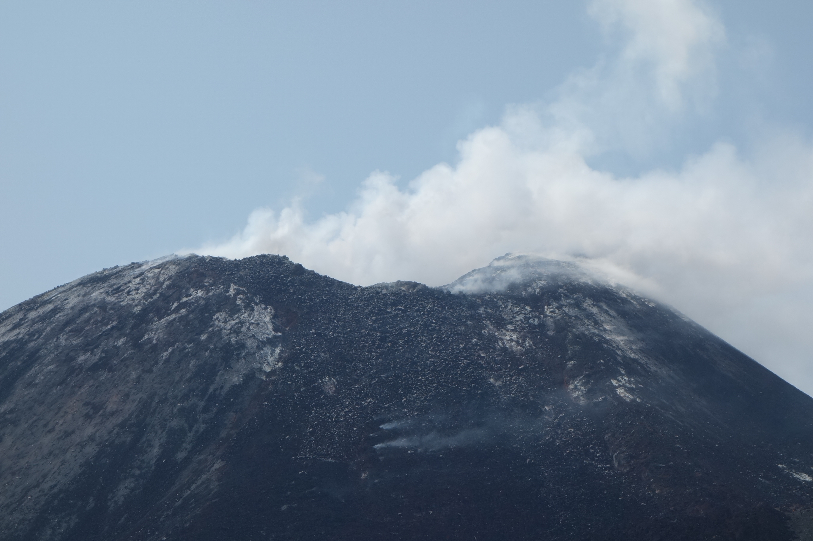
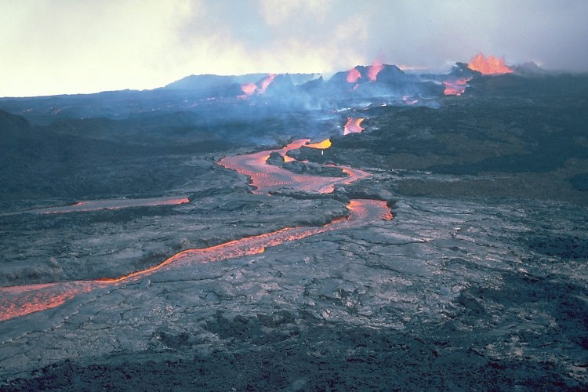
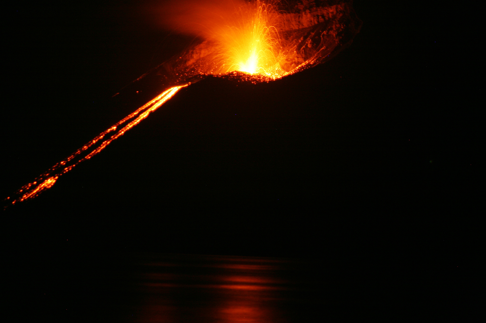
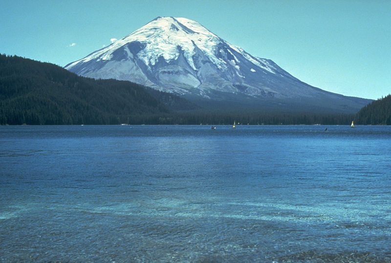
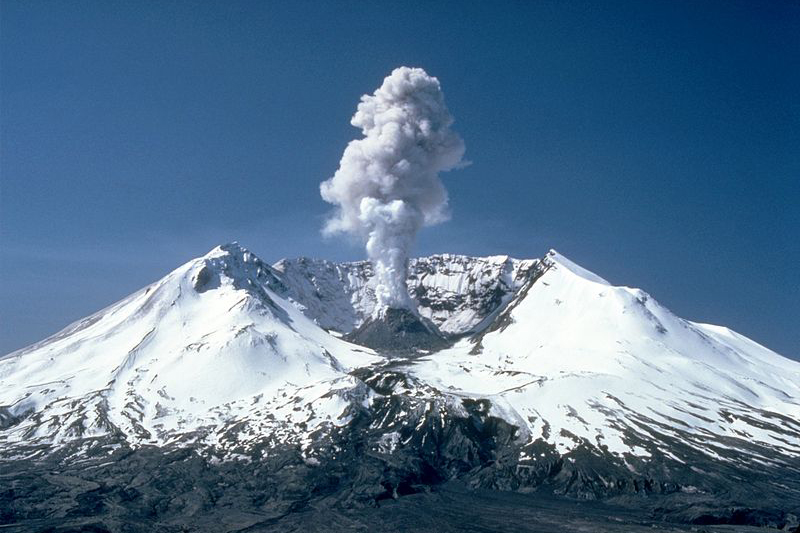

- Tell
- Plan
- Build
- About
- For Teachers
How are multimedia stories structured?
Stories are made of different parts and different elements. Here are some examples and explanations of each.
Beginning
Beginning
Start with a simple definition of what a volcano is.
A volcano is a rupture on the Earth’s surface (also called the crust) that allows hot lava, volcanic ash and gasses to escape from below the surface of the Earth.
The Earth’s crust is broken into 17 tectonic plates that are like big, floating slabs of solid rock just below the bottom of an ocean in a place called the Earth’s mantle. Volcanoes occur on Earth because the tectonic plates shift, making room for the lava, ash, and gasses from the hottest part of the Earth’s core to escape. Therefore, on Earth, volcanoes are generally found where tectonic plates are moving away from or toward one another.
Tell about the dangers of volcanoes and the damage they can cause.
But also tell about the beauty and power of volcanoes.
The Earth’s crust is broken into 17 tectonic plates that are like big, floating slabs of solid rock just below the bottom of an ocean in a place called the Earth’s mantle. Volcanoes occur on Earth because the tectonic plates shift, making room for the lava, ash, and gasses from the hottest part of the Earth’s core to escape. Therefore, on Earth, volcanoes are generally found where tectonic plates are moving away from or toward one another.
Information graphics show things photos can't. This one demonstrates the different parts of a volcan and what happens during an eruption.

Middle
Middle
Tell about some famous volcanoes, including some interesting facts about each one.
There are big and small volcanoes all over the world. But some are more famous than others.
Mt. Vesuvius is an active volcano in Naples, Italy that has erupted more than 30 times. Its most famous eruption took place all the way back in A.D. 79, when an eruption that lasted several days covered the cities of Pompeii and Stabiae in lava and ash.
This instance of audio allows the user to get a feeling of what the sound was like.
Krakatoa is another famous volcano in Indonesia that in 1883 erupted with 13,000 times the power of an atomic bomb. The sound of the spewing smoke and rock was reportedly heard thousands of miles away, as far as islands off the eastern coast of Africa.
Mount St. Helens is a famous volcano in the U.S. state of Washington that laid dormant for more than 120 years before it exploded in 1980 after an earthquake triggered the blast. The eruption caused a cascading landslide of hot ash and stone that traveled a total of 15 miles at speeds of at least 300 miles per hour. At the same time, a mushroom-shaped plume of ash shot 16 miles into the air, eventually covering three states. Mt. St. Helens erupted again in 2008!
Finally, Mauna Loa on the Big Island in Hawaii is the largest volcano on Earth, with a summit nearly 13,700 feet high. It is also one of the world's most active volcanoes. Since 1843, Mauna Loa has erupted 33 times, most recently in 1984. The volcano is 60 miles long and 30 miles wide. Its name Mauna Loa means "Long Mountain" in Hawaiian.
Photos should be used capture strong emotion or a key moment in time. Several photos can also be presented together as a photo gallery or slideshow, which also let’s the viewer interact with this part of the story.
- 
- 
- 
- 
- 

- 
- 
End
End
Conclude with some fun facts about how people have come to understand volcanoes and why they exist.
Many ancient cultures believed that volcanic eruptions were the result of supernatural causes. For example, the ancient Greeks thought volcanoes could only be explained as acts of the gods, who were angry with humans. A 16th Century astronomer even thought that volcanoes were the ducts for the Earth's tears.
Later, volcanic action was believed to be the result of chemical reactions in a thin layer of molten rock near the Earth’s surface. But today we know that volcanoes are the awesome display of the fiery power that is deep within the Earth.
Video should show action or take viewers somewhere they wouldn’t otherwise have access to. This video shows an up-close view of Mount Kilauea in Hawaii, which is something most people would never be able to see otherwise.